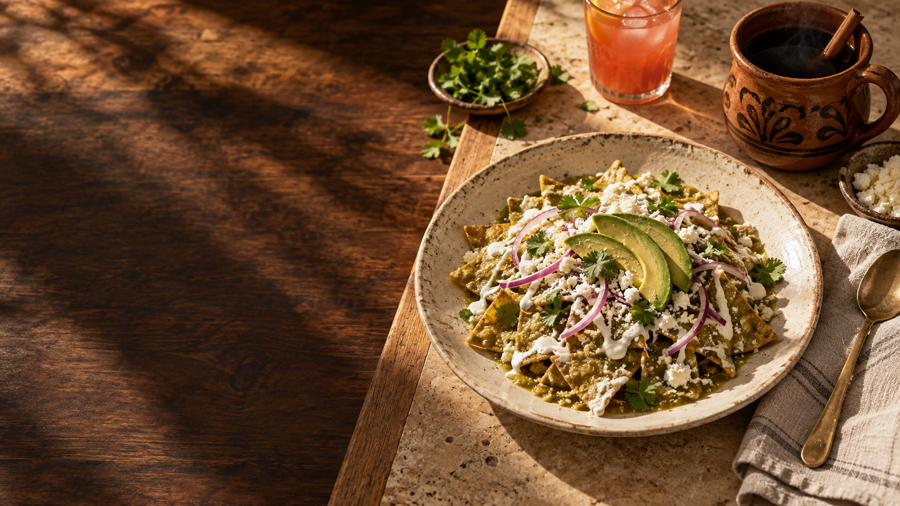

EL REFIL DE LA ABUELA · UNA NUEVA EXPERIENCIA
Tu esencia.
En cada mesa.
Todo conectado.
Más tiempo para recibir.
Más claridad para dirigir.
3 min · con narración
UNA MESA. UN PEDIDO. TODA LA HISTORIA.Descubre cómo funciona ↓Imagen de ambiente generada con IA
HECHO PARA TU FORMA DE ATENDER
Lo que sucede en una mesa.
Se entiende en todo el negocio.
Del primer «buenos días» al cierre de la cuenta.
Una experiencia que acompaña a tu equipo, paso a paso.
01 Recibir→02 Preparar→03 Cobrar→04 Entender
TU RESTAURANTE, EN TUS MANOS
Ahora, toma el control.
Elige una mesa. Crea un pedido. Mira cómo llega a cocina y se convierte en una venta. Tú marcas el ritmo.
Prototipo comercial conectado al alcance real. Las interacciones son locales; el piloto sustituye esta capa demo por Odoo.
VLUX POSRestaurante · Metepec
Demo sincronizada
PISO PRINCIPAL
Selecciona una mesa
LibreActivaCocina
Cada mesa guarda la historia de su servicio.
MESA —
CATÁLOGO DEMOToma la orden
Nombres basados en referencias públicas del restaurante. Los importes que no están verificados se señalan como demo y se sustituyen por Odoo real.
PANTALLA DE PREPARACIÓN
Cocina
0 Para preparar0 Listos
Aún no hay órdenes.
Los pedidos listos aparecerán aquí.
El siguiente paso se ve, no se adivina.
VLUX OWNER · HOY
Vista demoLa misma venta, ahora como decisión.
TRAZABILIDAD
Orden creada
Enviada a cocina
Preparación lista
Venta cobrada
EL PROYECTO
Una base sólida.
Una operación muy tuya.
Odoo 19 ya documenta operación para restaurantes: pisos y mesas, órdenes, envío a cocina/bar, división de cuentas, propinas, pantallas de preparación, autoservicio y lealtad. VLUX no necesita reinventar esas piezas.
Esta propuesta separa plataforma, capa VLUX actual y trabajo de implementación.
A
ODOO 19 · DISPONIBLE EN PLATAFORMA
Operación de restaurante
Mesas, órdenes, cocina, cuenta, preparación y reportes forman parte de la base tecnológica que configuramos y validamos.
- Pisos y mesas
- Órdenes por mesa
- Notificación a cocina/bar
- Cuenta dividida y propinas
- Pantalla de preparación
- Autoservicio / QR según alcance
B
VLUX · YA PRESENTE EN EL PRODUCTO
Control + lectura del negocio
El repo actual ya modela ventas, tickets, inventario, oportunidad de ROI y una experiencia Owner separada.
- Venta → ticket → stock
- Simulación de venta
- Dashboard / Owner
- Mobile Scanner
- Planes comerciales
- Calculadora ROI existente
C
PROYECTO · CONFIGURAR Y VALIDAR
Perfil El Refil
Esto sí requiere trabajo de VLUX: cargar catálogo real, mapear mesas, roles, cocina, hardware, pagos, capacitación y criterios de aceptación.
- Menú y precios reales
- Plano real de mesas
- Estaciones de preparación
- Usuarios y permisos
- Hardware y pagos
- Piloto en una sucursal
03 · DIFERENCIADOR
Odoo pone la base.
VLUX convierte esa base en operación medible.
01
Implementación adaptativa
La filosofía oficial de VLUX es que la tecnología se adapte a los procesos de la empresa, no al revés. Para el restaurante significa configurar flujo, roles, mesas, cocina y lectura gerencial alrededor de su forma real de operar.
PLATAFORMAPROCESO REALRESULTADO
Owner separado del cajero
La operación necesita velocidad; el dueño necesita síntesis. VLUX Owner mantiene esa separación en una PWA enfocada en lectura gerencial.
ROI explícito
No prometemos “ahorros mágicos”. El cálculo usa merma, compras, horas administrativas y ventas no registradas; todos los supuestos quedan a la vista.
Entrega acelerada con IA
Claude Pro / Codex aceleran configuración, código, pruebas y documentación. La validación operativa, hardware y QA siguen siendo humanos y no se omiten.
04 · CALCULADORA ROI
¿En cuánto tiempo recupera su inversión?
La calculadora replica la lógica que ya existe en el repo de VLUX POS. Es un escenario, no una garantía. Cambia cualquier supuesto frente a la clienta.
RECUPERACIÓN ESTIMADA2.7meses
con los supuestos actuales
¿De dónde sale?
Merma controlada$3,600
Compras mejor dirigidas$1,600
Tiempo administrativo$2,138
Ventas registradas$1,350
Fórmula VLUX actual
merma recuperada + compras recuperadas + tiempo recuperado + ventas registradas − mensualidadPREGUNTA COMERCIAL
“¿Cuál es el producto que más vendes?”
No sabemos cuál es el #1 real de El Refil. Las reseñas públicas mencionan con frecuencia chilaquiles y enchiladas; úsalo sólo para abrir la conversación y reemplázalo con el dato real de la dueña.
Contribución mensual actual$42,350Escenario extra por disponibilidad+$847/mesNo incluido en el ROI principal para evitar doble conteo.
05 · FECHA REALISTA
Resultados visibles en días.
Producción estable en semanas.
Asumiendo cierre después de la reunión, una sucursal piloto y sin integración de hardware exótico. El calendario incluye margen porque VLUX mantiene otros proyectos en paralelo.
Demo comercial
Esta experiencia: flujo, alcance, ROI y preguntas de diagnóstico.
LISTODiagnóstico + sandbox
Menú real, usuarios, mesas, métodos de pago y estaciones.
3–4 díasPrimera operación real
Catálogo, plano de mesas y orden real en ambiente de prueba.
Resultado visibleCocina + Owner + QA
Preparación, roles, reportes, validación de flujo y capacitación inicial.
Semana 3Piloto 1 sucursal
Operación controlada, medición de fricción y correcciones.
Semana 4Go-live objetivo
Ventana conservadora para estabilizar sin descuidar otros proyectos.
6–7 semanasIA aceleraconfiguración, código, pruebas, documentación y análisis.
No acelera mágicamentelevantamiento, decisiones del cliente, hardware, capacitación y pruebas en operación.
Dependenciascatálogo, procesos, responsables, equipos, métodos de pago y acceso técnico.
+
SIGUIENTE PASO
La siguiente mesa
puede ser la tuya.
El siguiente entregable después del sí no es otra presentación: es un sandbox con su menú, sus mesas y un recorrido completo con datos controlados.